석탄과 머스켓 - 1813년 프랑스의 병기창
게시: 2022-02-21T06:30:08+09:00
지난 편에서, 전시에는 인구의 2.5% 정도를 병력으로 유지하는 것이 일반적이라고 언급했습니다만, 꼭 그렇지는 않았습니다. 가령 군국주의 국가 프로이센 같은 경우 7년 전쟁 기간 중 인구의 6%에 달하는 병력을 유지하기도 했습니다. 물론 이들 중 상당수는 외국 용병들이긴 했습니다. 왜 인구 대비 더 많은 병력을 유지하는 것이 어려웠을까요? 프랑스 대혁명이 벌어지기 3년 전인 1786년, 프랑스의 무장병력은 고작 16만도 되지 않았습니다. 그러나 불과 8년 뒤인 1794년, 제1차 대불동맹전쟁이 벌어지면서 유럽 전체와 싸워야 했던 프랑스 혁명정부는 무려 80만의 병력을 소집하여 전선에 투입했습니다. 물론 그 사이에 프랑스 인구가 대폭 늘어난 것은 아니었습니다. 그 전에는 그렇게 많은 병력이 필요하지 않았으므로 모병을 하지 않았을 뿐이었지요. 그러나 바로 그 다음해인 1795년, 프랑스의 병력은 순식간에 40만으로 줄어듭니다. 그 사이에 전쟁이 끝났나요? 아닙니다. 제1차 대불동맹전쟁은 1797년에야 나폴레옹의 활약으로 비로소 끝납니다. 1792년 발미(Valmy) 전투를 기점으로 전쟁이 왕가들 간의 이익 분쟁이 아닌, 자신들의 정치체제를 지키기 위한 국민 전쟁이 되면서 대규모로 병력을 모으는 것은 가능해졌습니다. 그러나 결국 병력을 모을 수 있다는 것과 그 병력을 유지하고 제대로 활용하는 것은 별개의 일입니다. 제1차 대불동맹당시 프랑스군은 병력 부족보다도, 이미 모은 군대를 무장시키고 먹이고 입히고 급여를 주는 것에 큰 어려움을 겪고 있었습니다. 그 실상을 가장 잘 살펴볼 수 있는 것이 1796년 이탈리아 방면군 사령관으로 부임한 나폴레옹의 처지였습니다. 당시 이탈리아 방면군의 서류상의 병력은 10만 명 정도였지만 실제로는 겨우 3만5천 정도의 병력만 동원 가능했고, 무엇보다도 보급이 전혀 안되고 있었습니다. 즉, 병사들은 급료는 커녕, 제복과 무기는 물론 당장 먹을 식량조차 거의 받지 못하고 있는 상황이었습니다. 그래서 나폴레옹이 원정을 간다고 하자, 병사들은 '행군을 시키려면 먼저 군화부터 달라'는 아우성을 쳐댔습니다.
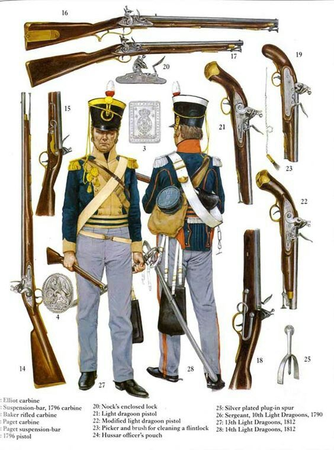
(이건 보병이 아니라 짧은 기병용 카빈총과 권총으로 무장한 용기병(dragoon)이네요.)
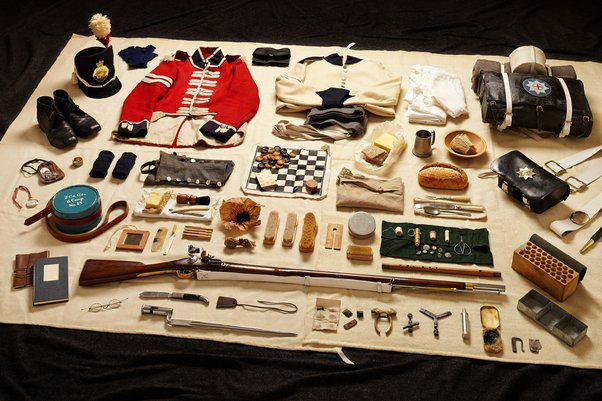
(나폴레옹 전쟁 당시 영국군 병사의 개인장비류입니다. 총부터 시작해서 각종 벨트와 빗, 손수건 등 의외로 온갖 것이 많습니다.) 1796년의 나폴레옹은 일개 방면군 사령관에 불과했지만 1813년의 나폴레옹은 프랑스의 황제였고 프랑스의 모든 자원을 마음대로 사용할 수 있었습니다. 당시 프랑스의 산업 생산력은 새로 편성된 20만 30만의 군대를 무장시킬 능력이 되었을까요? 이미 증기기관을 앞세운 산업혁명에 활활 타오르던 영국과는 달리 프랑스는 농사나 짓고 비단이나 짜던 농업국가였는데 말입니다. 총과 대포를 잔뜩 만드려면 무엇보다 철강 생산량이 충분해야 했습니다. 과연 당시 프랑스의 철강 생산량을 어땠을까요? 아무래도 영국보다는 훨씬 떨어졌겠지요? 먼저, 뜻밖의 사실을 아셔야 하는데, 18세기 초반까지 영국의 제철 산업은 꾸준히 쇠퇴하고 있었습니다. 당시 영국에서 사용되는 철봉의 2/3는 수입품일 정도였습니다. 그 원인은 다름아닌 연료 부족 때문이었습니다. 영국에서는 2세기 경부터 로마인들이 석탄 채굴에 나설 정도로 석탄은 일찍부터 인류에게 알려진 연료였지만, 깊은 땅 속에서 캐내기도 힘들 뿐더러 그 무게 때문에 수송비가 너무 비싼데다 연소 시에 발생하는 유독 가스 때문에 그렇게 많이 사용되지는 않았습니다. 특히, 석탄 속에 함유된 황은 사람보다도 무쇠에 더 안좋은 영향을 주었기 때문에, 철광석에서 무쇠를 뽑아내는 용광로(blast furnace)에서는 석탄을 사용하지 못했습니다. 그렇다면 무엇을 썼을까요 ? 바로 숯이었습니다. 사실 철광석이라는 것은 돌 사이에 산화된 철이 박혀 있는 것이거든요. 높은 온도로 돌과 산화철을 녹이는 것도 필요하지만, 산소와 결합된 철을 분리해내려면 산소가 철보다 더 좋아하는 것을 제공해주어야 했습니다. 바로 탄소지요. 숯이나 석탄이나 주성분은 탄소니까요. (그 과정에서 대량의 일산화탄소나 이산화탄소가 쏟아져 나오는 것은 비극이지요.)
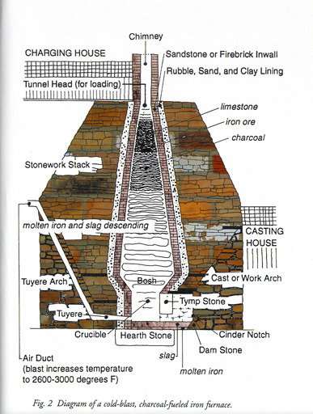
(목탄을 써서 철광석으로부터 선철을 뽑아내는 전통적인 용광로의 구조입니다.) 요약하면, 당시 제철 과정에는 석탄이 아니라 숯을 써야 했는데, 당시 영국에서는 숲을 베어내어 제철용 숯을 만들던 것이 한계에 달하여 숯 공급량이 떨어졌던 것입니다. 그래서 영국은 주로 스웨덴처럼 철광석 뿐만 아니라 숲이 풍부한 나라들에서 제조된 철강을 수입해 써야 했습니다. 이렇게 공급도 부족하고, 따라서 비싼 숯 대신, 16세기부터 석탄을 이용한 제철법이 많이 연구되었으나, 역시 석탄 속의 황 성분이 철광석에 악영향을 끼치는 문제때문에 계속 실패해왔습니다. 영국의 철강 생산이 다시 활발해진 것은 기술 혁신 덕분이었습니다. 18세기 초 영국의 에이브러엄 다비(Abraham Darby)가 석탄을 가열 처리하여 탄소 함량을 높여 코크스로 만드는 법과, 이를 이용한 코크스 제철법을 최초로 성공시켰습니다. 그 결과, 영국의 제철 산업은 비약적으로 발전을 거듭하여, 마침내 1787년 영국 해군성에서는 여태까지 스웨덴에서 수입해서 쓰던 군함의 닻을 영국산 닻으로 교체했습니다. 영국이 산업혁명을 일으킨 것은 증기기관의 발명이 가장 큰 역할을 했다고 합니다만, 이처럼 실은 그 연료인 석탄 활용이 오히려 더 중요한 역할을 했습니다. 그리고 이 모든 것은 영국에 석탄 매장량이 풍부했기 때문에 가능했습니다.
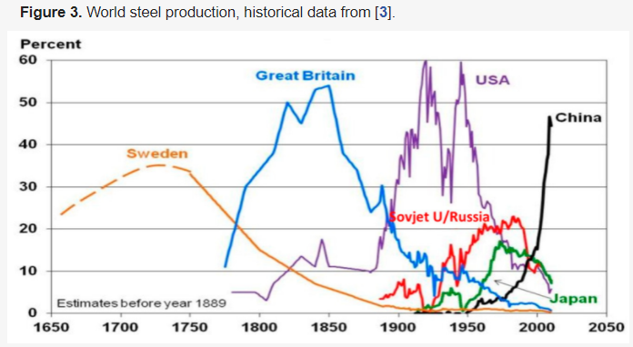
(1800년 즈음해서 당시 세계 철강 생산량의 국가별 %를 보십시요. 프랑스는 아예 명함을 내밀지 못하고 있는 가운데 치솟는 영국과 쇠락하는 스웨덴의 모습이 인상적입니다.)
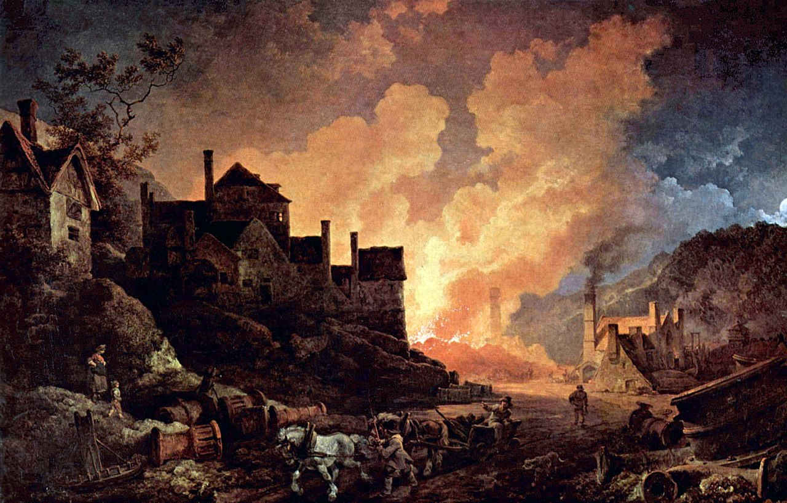
(1800년 경 코울브룩데일의 제철소를 그린 그림입니다.)
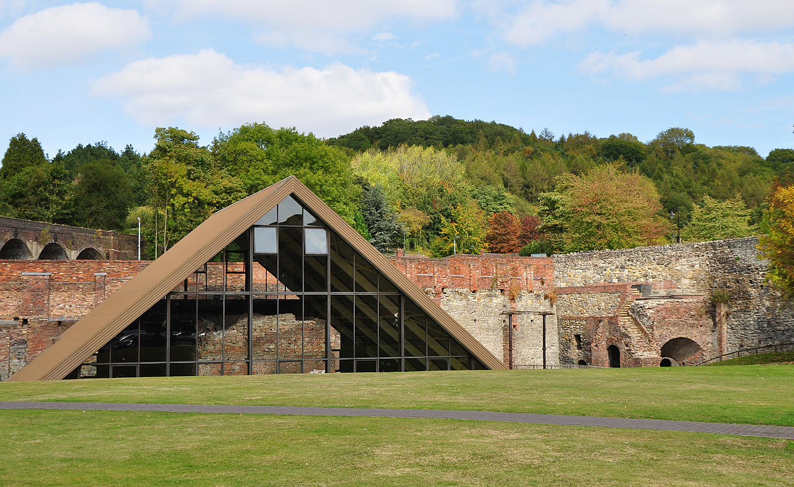
(코크스 제철방식을 개발한 다비가 발명한 코크스 용광로입니다. 그의 업적을 기리는 영국 코울브룩데일 제철 박물관(Coalbrookdale Museum of Iron)의 일부입니다.) 영국의 경쟁자인 프랑스는 어땠을까요? 프랑스가 훨씬 땅이 넓으니 당연히 석탄도 더 많았겠지요? 아니었습니다. 이미 영국에서 석탄을 이용한 제철업이 활황을 띄고 있다는 것을 뻔히 알면서도 프랑스인들은 선뜻 그런 기술적 변화에 대해 돈을 투자하기를 꺼려했습니다. 가장 큰 이유는 아무래도 프랑스에는 영국만큼 석탄이 많이 나지 않았다는 것에 있었습니다. 나폴레옹 당시 프랑스의 탄광 지역은 다름아닌 벨기에였습니다. 벨기에는 원래 프랑스 땅이 아니라 오스트리아 합스부르크 왕가의 지배 하에 있었습니다만, 1795년 프랑스 혁명정부가 이를 점령하여 아예 합병을 해버렸습니다. 덕분에 벨기에 지역의 아이노(Hainault)와 리에쥬(Liege) 지역의 풍부한 석탄 광산이 프랑스 자본에 의해 개발되었는데, 이는 역시 제철업을 위한 것이었습니다. 나폴레옹 재위 기간 중, 벨기에 지방에서 생산된 석탄은 프랑스 제국 전체 생산량의 절반에 해당되었고, 벨기에 지방의 제철 생산량도 연간 17,382톤에서 27,925톤으로 증가했습니다. 고용도 활발해서, 프랑스 제국 전체 석탄 광부 수는 7만 명 정도였는데, 그 중 절반은 벨기에의 4개 행정구에서 고용되어 있을 정도였습니다. 덕분에 프랑스 전체의 석탄 생산량은 1794년 25만 톤에서 1814년에는 80만 톤으로 늘어났고, 제철 생산량도 6만 톤에서 11만2천 톤으로 증가했습니다. 그 뿐만 아니라 원래부터 프랑스는 무기 제조업에 있어서는 결코 이류국가가 아니었습니다. 프랑스는 루이 14세 이후 유럽을 주름잡는 육군 국가로 군림했으므로 당연히 총과 대포 생산량에 있어서 유럽 상위권에 속했습니다. 더군다나 과격한 혁명정부가 들어선 이후 유럽 전체와 전쟁을 벌였던 제1차 대불동맹전쟁이 시작되면서, 프랑스의 무기 공장들은 전에 없는 호황을 맞이했습니다. 벨기에를 병합하기 이전에도 이미 대포 생산은 전시체제에 들어가서 1789년 프랑스 육군 전체가 보유했던 1,300문이 1795년에는 2,600문이 되었습니다. 혁명과 그에 따른 경제적 혼란 속에서도 연간 200문이 넘는 생산을 해냈던 것입니다. 이런 생산력은 계속 늘어나서, 1805년 프랑스 정부가 파악하고 있던 대포의 1달 생산량은 최대 250문이었습니다. 또한 머스켓 소총의 재고량도 1789년 고작 10만 정에 불과하던 것이 불과 2년 만인 1791년 245,500정으로 급증했습니다. 다만 이건 기존 생산품을 매입 및 압류한 것을 포함한 수치였고, 1790년대 초반 프랑스의 머스켓 연간 생산량은 약 4만2천 정 정도였습니다. 프랑스가 괜히 유럽 제1의 육군국이 되었던 것이 아니었습니다. 루이 15세 시절인 1717년 프랑스는 여태까지 해왔던 것처럼 공장마다 장인마다 제멋대로 만들었던 머스켓 소총을 규격화하여 '프랑스 표준 보병 소총'이라는 것을 만들었습니다. 이것이 바로 Le fusil Charleville Modèle 1717, 즉 샤를빌 머스켓 소총입니다. 이 머스켓 소총은 구경과 탄약 뿐만 아니라 스프링 등 각종 부품들을 표준화하여 일부 부속품이 고장나더라도 다른 고장난 소총에서 멀쩡한 부품을 뽑아 수리하기도 쉬웠고, 한 공장에서 만든 소총을 다른 공장에서도 쉽게 수리할 수 있었습니다. 이 소총이 샤를빌 머스켓이라고 불리운 이유는 이 소총이 최초로 만들어진 무기 공장이 샤를빌(Charleville-Mézières)에 있었기 때문이었는데, 이 샤를빌도 벨기에와의 국경 지대에 있었을 뿐만 아니라 원래 만토바 공작 소유의 도시였다가 루이 14세 시절인 1708년에 프랑스에 귀속된 도시였습니다. 여러모로 벨기에는 프랑스 공업계의 구원자였던 셈입니다. 나폴레옹은 샤를빌(Charleville) 외에도 1806년 추가로 리에쥬(Liege), 뮈트식(Mutzig), 토리노(Turin) 등에도 병기창을 지어 무기 생산량을 늘렸습니다. 리에쥬는 지금 벨기에 땅이고, 뮈트식은 석탄이 풍부한 알사스 지방의 도시였다는 점을 생각하면 석탄과 무기 생산의 연결성을 분명히 보실 수 있습니다.
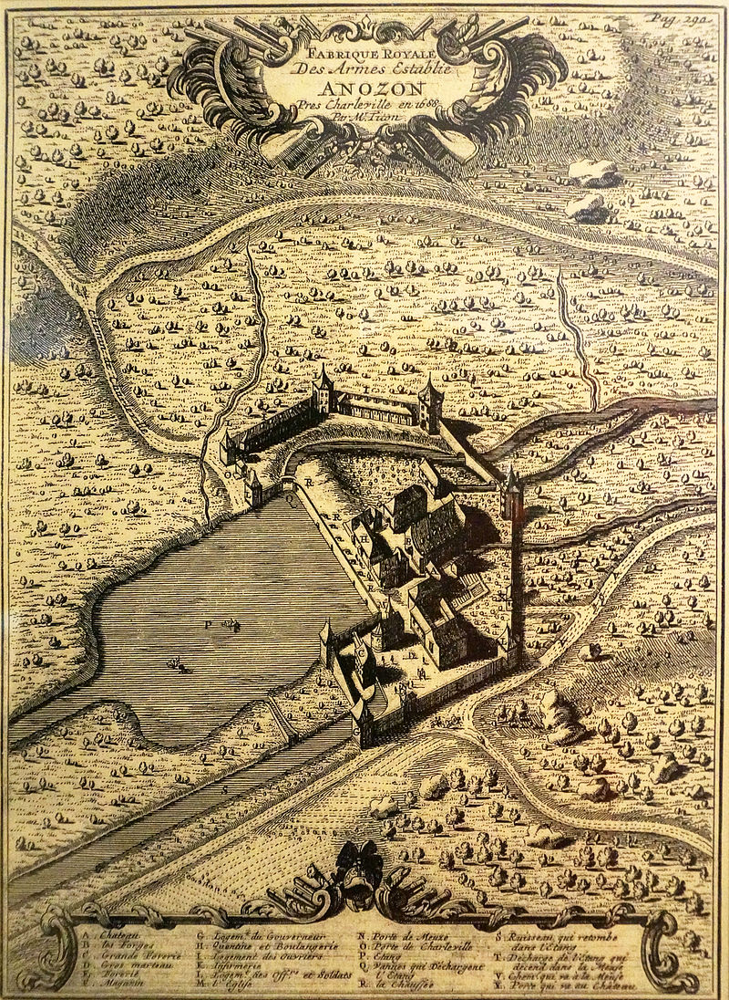
(1688년 샤를빌에 있던 병기창의 조감도입니다.)
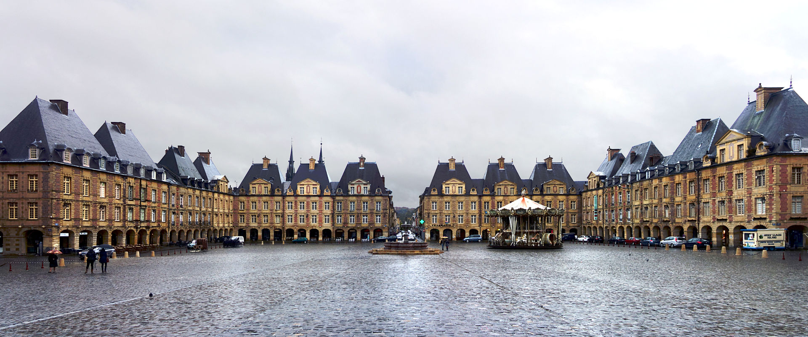
(샤를빌에 있는 Place Ducale (공작 광장)입니다. 원래 17세기 초 이 일대를 지배하고 있던 만토바 공작 샤를 1세가 지은 것이라서 이런 이름이 붙었습니다.)
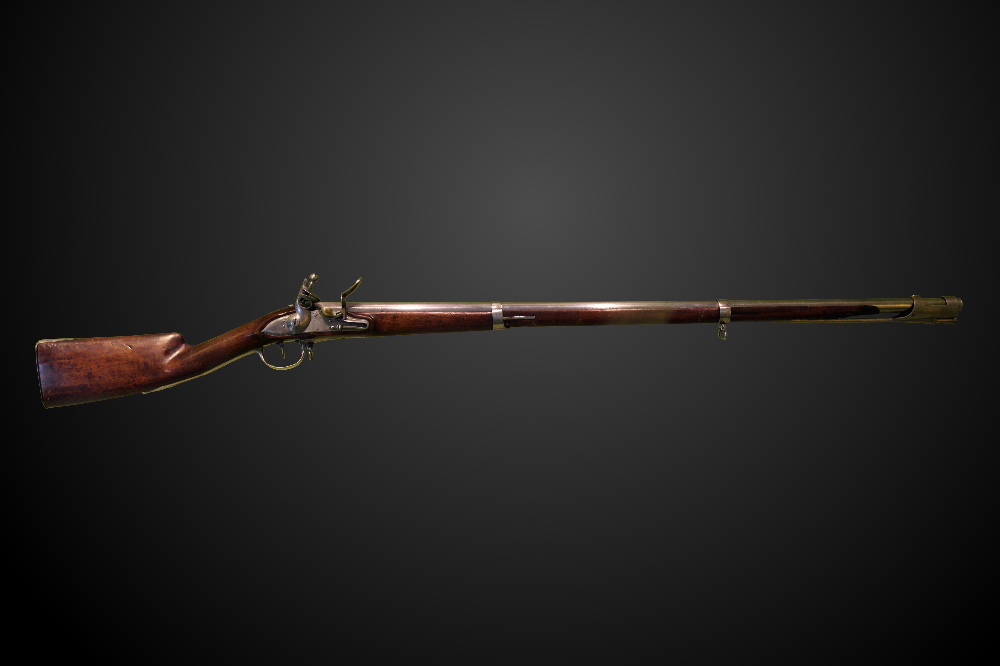
(미국 독립전쟁과 나폴레옹 전쟁은 물론, 그 이후 1840년대까지도 계속 사용된 머스켓의 명품 1777년형 샤를빌 머스켓입니다. 무게는 신통하게도 Colt M-16 소총과 비슷한 4.6kg입니다. 동시대 다른 나라의 소총, 가령 영국의 Brown Bess 머스켓에 비해 가볍고 명중률도 좋았다고 합니다.) 위에서 1789~1791년 사이 프랑스의 머스켓 생산량은 연간 4만2천 정 정도라도 했지요. 한달 3천5백 정 정도를 생산할 수 있었던 셈입니다. 1813년 초에는 어땠을까요? 1813년 11월의 기록이긴 합니다만, 당시 프랑스 전체의 병기창에서는 한달 머스켓 3만 정을 생산할 수 있었습니다. 아마 1813년 초에도 이 정도의 생산역량을 가지고 있었을 것입니다. 뿐만 아니라 러시아로 보낸 군대를 무장시켰던 수십만 정의 머스켓 소총 외에도, 프랑스 각 병영과 요새에 보관된 머스켓 및 탄약 비축분은 충분했습니다. 설령 러시아 원정에 여태까지의 모든 비축분을 다 쏟아부었다고 해도, 1812년 7월부터 12월까지 6개월만의 생산량만으로도 18만 정의 머스켓 소총을 확보하고 있었을테니까요. 그러나 나폴레옹의 가장 큰 문제점, 즉 병력의 보존에 전혀 관심이 없다는 단점은 여전했습니다. 라이프치히 전투를 비롯하여 큼직한 전투를 여러번 치른 나폴레옹은 이 막대한 무기와 탄약을 1813년 내내 꾸준히 말아먹었습니다. 그 결과 1814년 2월 파리의 방어를 위해 열어본 파리의 무기고에는 불과 1만1천정의 머스켓 소총이 남아 있었을 뿐이었고, 파리 외곽 벵센(Vincennes) 요새를 톡톡 털어봐도 수리를 해야 쓸 수 있는 낡은 머스켓 3만정만 구할 수 있었습니다. 그때 즈음이 되면 나폴레옹은 급기야 '어차피 쓰지도 않는 포병대의 장창을 걷어 국민방위군을 무장시키라'는 명령을 내릴 지경에 이릅니다. 이렇게 1813년 초만 하더라도 무기와 탄약류의 생산 능력과 재고가 충분했습니다만 오히려 군복과 군화의 생산량은 여전히 기대에 미치지 못했습니다. 같은 기간 프랑스의 군복 생산량은 하루에 2천 벌에 불과하여, 한달 25일 조업을 가정하면 5만벌 정도였습니다. 머스켓 소총보다 더 많은 생산량이긴 했습니다만 머스켓 소총에 비해 군복, 특히 군화는 내구도가 매우 떨어지는 물건이라서 수요가 훨씬 많았습니다. 당시 군화의 품질은 매우 조악했고 도로 사정은 훨씬 더 험했기 떄문에, 원정에 나설 경우 군화는 보통 몇 주를 못 버텼습니다. 나폴레옹의 전성기 때에도 프랑스군은 항상 군복, 특히 군화의 부족 때문에 고질적인 문제를 겪고 있었기 때문에, 전투가 끝나면 병사들은 언제나 적의 시체나 포로로부터 군화를 빼앗는 것이 보통이었고, 정규 지급되는 군복조차도 노획되거나 밀수된 영국제 직물로 군대를 입히는 경우가 많았습니다. 이건 단순히 제니 방적기(spinning jenny)나 증기기관이 없기 때문에 벌어진 일은 아니었습니다. 산업혁명은 단순히 특정 기술이나 기계가 있냐 없냐의 문제가 아니라, 면화와 같은 원재료의 확보, 노동력과 시장의 확보 등 여러가지 요건이 갖추어져야 이루어져야 할 수 있는 일이기 때문이었습니다.
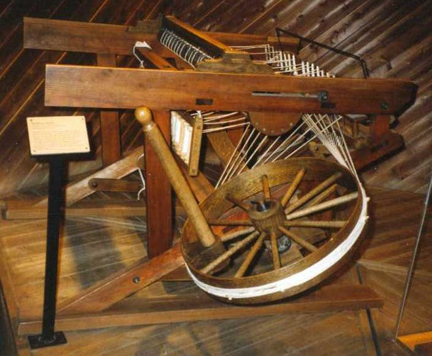
(제니 방적기입니다. 이건 이미 1765년에 발명되었고 1780년대에는 프랑스에도 도입된 물건입니다. 방적기의 이름이 이렇게 붙은 것은 발명자인 제임스 하그리브스의 딸 제니의 이름을 딴 것이라고 합니다만, 실제로는 하그리브스에게는 제니라는 이름의 딸은 없었습니다. 가장 그럴싸한 설명은 engine이라는 단어를 그냥 발음하기 편하게 jenny라고 불렀다는 것입니다.)
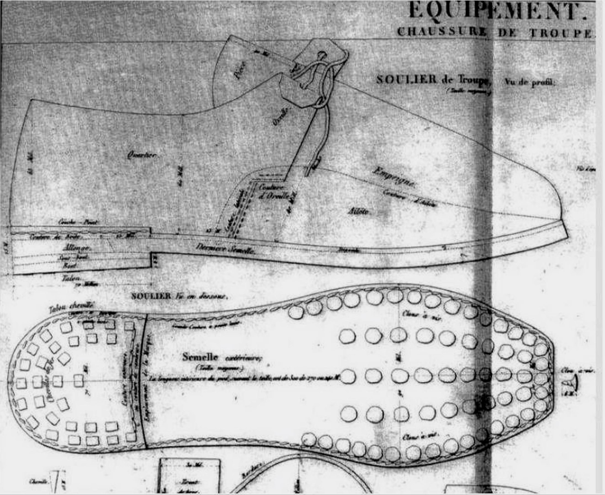
(나폴레옹 당시의 일반 병사의 군화입니다. 당시 군화는 소가죽으로 만들기는 했습니다만 사이즈는 딱 3가지로서 대중소 뿐이었고, 요즘 사람들은 무척 놀랄 일이긴 합니다만 좌우 구별이 없었습니다. 일단 신고 다니다보면 착용자의 발 모양에 따라 자연스럽게 좌우가 구별되어 변형되었다고 하네요. 그리고 군화 끈을 꿰는 구멍은 그냥 가죽에 구멍을 뚫은 것일 뿐 금속제 링을 박아넣어 내구성을 좋게 만든 것이 아니어서, 군화 끈을 졸라매다보면 구멍 부분이 쉽게 찢어졌습니다.) 가령 1813년 여름, 이탈리아 왕국을 지키기 위해 싸웠던 외젠이 새로 편성한 군대도 손에 샤를빌 머스켓 소총은 들고 있었으나, 군복을 제대로 입지는 못했습니다. 외젠의 부관이었던 드 비뇰(Martin de Vignolle) 장군은 이렇게 회상했습니다. "전투가 시작되자, 우리는 대부분 민간용 자켓을 입고 작업모를 쓴 신병들이 (탄약 보관낭이 없어서) 자켓 주머니에 탄약포를 잔뜩 집어넣은 채, 소속된 연대의 명예를 지키기 위해 용감히 싸우는 모습을 볼 수 있었다. 그들이 자신의 연대로부터 물려받은 것은 그 연대의 이름 뿐, 그들은 복장이든 훈련이든 아무것도 물려받지 못했었다."
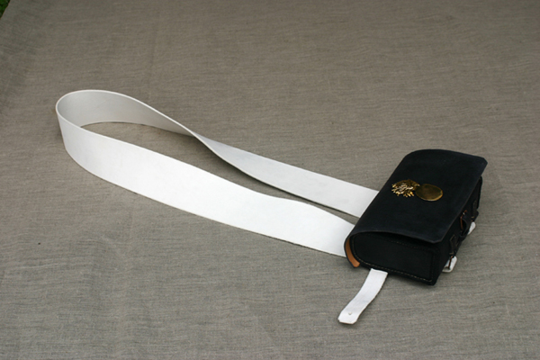
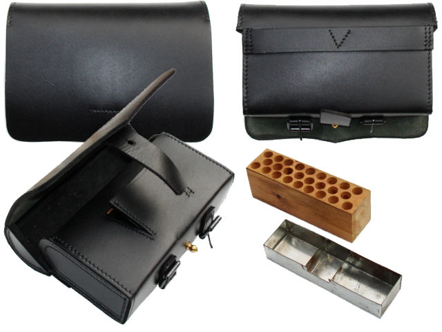
(머스켓볼과 적당량의 흑색화약을 종이에 말아 묶은 탄약포(cartridge)는 원래 이렇게 어깨에 걸쳐 매는 탄약 보관낭(Porte-cartouche)에 보관해야 합니다. 가죽으로 된 보관낭 속에는 저렇게 탄약포를 꽂을 수 있는 구멍을 파놓은 나무틀이 들어있는 경우가 많았습니다. 탄약포 60개를 병사 개인이 휴대했는데, 60개면 무게가 대략 2.2kg 정도로서 꽤 무거웠기 때문에 자켓 주머니에 쑤셔 박아둘 물건은 아니었습니다.) 문제는 이런 소총이나 탄약, 군복은 물론이고 병력 자체도 공짜가 아니라는 점이었습니다. 병사들을 모았으면 먹이고 재우고 급여를 주어야 했거든요. 다음 편에서는 가장 까다로운 문제인 돈 문제를 어떻게 해결하는지 보시겠습니다. Source : 1812 Napoleon's Fatal March on Moscow by Adam Zamoyski The Life of Napoleon Bonaparte, by William Milligan Sloane Great Generals of the Napoleonic Wars by Andrew Uffindell http://explorepahistory.com/displayimage.php?imgId=1-2-FBE https://en.wikipedia.org/wiki/Spinning_jenny https://journals.sagepub.com/doi/full/10.1177/0968344513483071 https://en.wikipedia.org/wiki/War_of_the_First_Coalition https://en.wikipedia.org/wiki/Abraham_Darby_I https://www.mdpi.com/2075-4701/10/7/972/htm https://en.wikipedia.org/wiki/Charleville-M%C3%A9zi%C3%A8res https://en.wikipedia.org/wiki/Charleville_musket https://fr.wikipedia.org/wiki/Place_Ducale https://sedlar.livinghistory.cz/en/vojenska_vystroj.html https://www.re-enactmentshop.com/shop/weapon-accessories/parts-and-accessories/british-cartridge-box-block-and-tin/ https://www.wikiwand.com/en/Economic_history_of_the_United_Kingdom https://blog.napoleon-cologne.fr/en/the-napoleonic-soldiers-a-badly-shod-army/